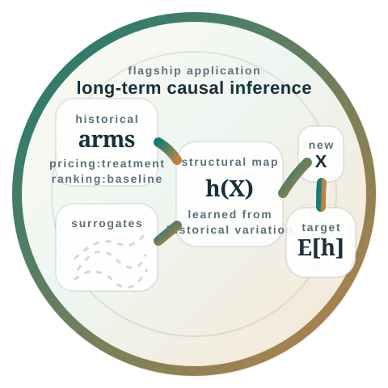
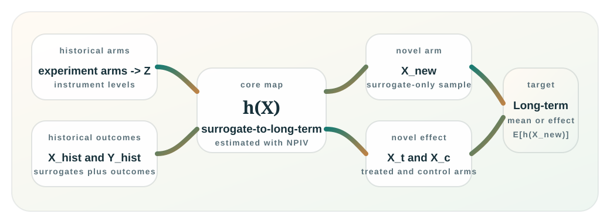

Novel experiment
The new experiment may only reveal short-term measures such as clicks, sessions, conversion proxies, or early retention markers.
Application Layer
This page is for users with historical experiments, surrogate outcomes, and a novel experiment whose long-term outcome is not yet available. The package treats historical experiment arms as the instrument and novel surrogate distributions as the target covariate law.

Problem Setup
The motivating use case is a new experiment with only short-term surrogate outcomes, together with historical experiments where both surrogate and long-term outcomes were observed.
Targets are a long-term mean for one novel arm or a long-term treatment effect for a novel experiment.
The new experiment may only reveal short-term measures such as clicks, sessions, conversion proxies, or early retention markers.
Historical experiments provide the joint observation of surrogate outcomes and long-term outcomes, together with experiment-arm assignments that shifted the surrogate distribution.
For one novel arm, the target is E[h(X_new)]. For a
novel treated and control arm, the target is
E[h(X_new_treated)] - E[h(X_new_control)].
Surrogate-To-NPIV Map
The package’s wrapper interface is direct: historical experiment
arms become the discrete instrument, historical surrogate vectors
become X_hist, historical long-term outcomes become
Y_hist, and the novel surrogate sample becomes
X_new.
The same package can therefore expose both a low-level NPIV interface and an application-native causal wrapper.

ZX_histY_histX_newencode_experiment_armsestimate_long_term_mean_from_surrogatesestimate_long_term_effect_from_surrogatesEncoding And Diagnostics
The encoding guide is intentionally strict. It distinguishes single-arm historical designs from overlapping historical experiments and treats sparse overlap cells as design issues to surface.
The package does not silently pool or merge sparse overlap categories in v1.
Single active arm per row
mode="single" when each historical unit
belongs to exactly one experiment arm.
pricing_test:treatment or pass local arm labels
together with experiment_ids.
control or
treatment without telling the package which
experiment they belong to.
Overlapping historical experiments
mode="overlap" when a historical unit can be
exposed to multiple concurrent experiments.
Illustrative Example
The snippet below is the surrogate quickstart from the current README. It shows the interface for a novel treated and control arm after historical surrogates and long-term outcomes have been assembled.
The full simulated workflow lives in
scripts/reproduce_surrogate_case_study.py.
import numpy as np
from discreteNPIV import estimate_long_term_effect_from_surrogates
rng = np.random.default_rng(12)
historical_experiment_ids = np.repeat(["exp_a", "exp_b", "exp_c"], 80)
historical_arm_labels = np.tile(np.repeat(["control", "treatment"], 40), 3)
arm_shift = {
"exp_a:control": np.array([0.0, 0.1, -0.1]),
"exp_a:treatment": np.array([0.4, 0.2, 0.0]),
"exp_b:control": np.array([-0.1, 0.0, 0.1]),
"exp_b:treatment": np.array([0.2, 0.3, 0.2]),
"exp_c:control": np.array([0.1, -0.2, 0.0]),
"exp_c:treatment": np.array([0.3, 0.1, 0.3]),
}
theta = np.array([0.8, -0.5, 0.4])
surrogates = []
outcomes = []
for experiment_id, arm_label in zip(historical_experiment_ids, historical_arm_labels, strict=True):
key = f"{experiment_id}:{arm_label}"
confounder = rng.normal(scale=0.35)
x = arm_shift[key] + confounder + rng.normal(scale=0.2, size=3)
y = x @ theta + 0.5 * confounder + rng.normal(scale=0.2)
surrogates.append(x)
outcomes.append(y)
X_hist = np.asarray(surrogates)
Y_hist = np.asarray(outcomes)
X_new_control = rng.normal(loc=[0.05, 0.0, 0.0], scale=0.2, size=(500, 3))
X_new_treated = rng.normal(loc=[0.25, 0.15, 0.1], scale=0.2, size=(500, 3))
effect = estimate_long_term_effect_from_surrogates(
X_hist=X_hist,
Y_hist=Y_hist,
historical_arms=historical_arm_labels,
historical_experiment_ids=historical_experiment_ids,
X_new_treated=X_new_treated,
X_new_control=X_new_control,
n_splits=2,
random_state=12,
)
print(effect.selected.estimate)
print(effect.selected.ci_lower, effect.selected.ci_upper)
print(effect.selected.method_name)
For a single novel arm, effect.treated_mean.selected
or effect.control_mean.selected gives the estimated
long-term mean.
effect.selected is the estimated long-term
treatment effect with a standard error and confidence interval.
effect.encoding records how the historical
experiments were encoded and whether some categories are sparse.
Assumptions
The package does not prove a causal design is valid. It is built for settings where the paper’s assumptions are a plausible approximation.
The package can still run when these conditions are weak, but the causal interpretation becomes weaker.
Key assumptions
Support and implementation notes
References And Navigation
This page covers the surrogate application path; the low-level NPIV interface remains on the main package page.
README.md,
docs/long_term_surrogate_case_study.md,
docs/experiment_encoding.md, and
docs/loo_jackknife.md.